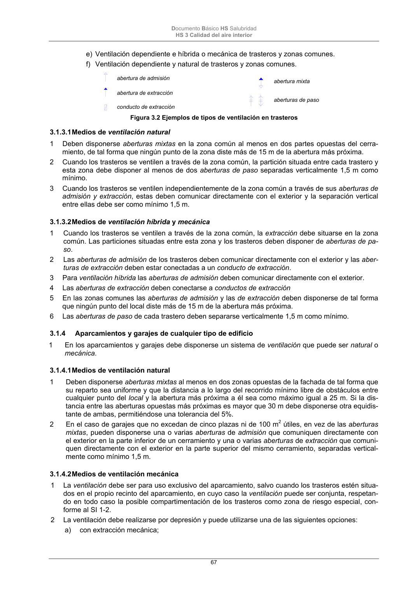
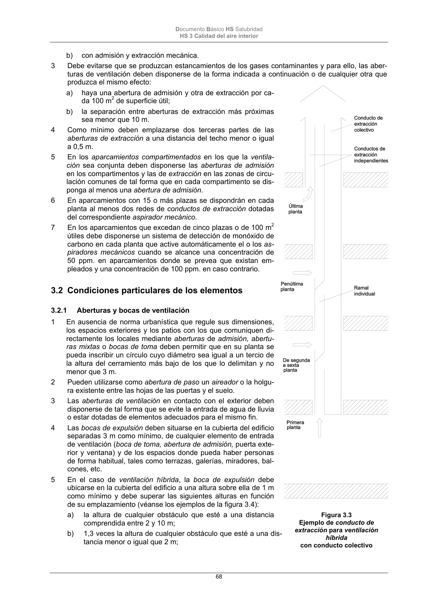

DB-HS Salubridad · edición 2022-06-14 · capa oficial
Documento DB-HS-oficial · SHA-256 del PDF 68df3caacc95f71aee2ec1ba7b2c65ae66155c21e3a8785521b8fdd4fd640d3b
Copia fiel del PDF fuente · Fuente oficial
Ficha de la disposición en la fuente oficial
Formatos: JSON del segmento · Markdown
3.1.4.2 Medios de ventilación mecánica 1 La ventilación debe ser para uso exclusivo del aparcamiento, salvo cuando los trasteros estén situa- dos en el propio recinto del aparcamiento, en cuyo caso la ventilación puede ser conjunta, respetan- do en todo caso la posible compartimentación de los trasteros como zona de riesgo especial, con- forme al SI 1-2. 2 La ventilación debe realizarse por depresión y puede utilizarse una de las siguientes opciones: a) con extracción mecánica; Documento Básico HS Salubridad HS 3 Calidad del aire interior 68 b) con admisión y extracción mecánica. 3 Debe evitarse que se produzcan estancamientos de los gases contaminantes y para ello, las aber- turas de ventilación deben disponerse de la forma indicada a continuación o de cualquier otra que produzca el mismo efecto: a) haya una abertura de admisión y otra de extracción por ca- da 100 m2 de superficie útil; b) la separación entre aberturas de extracción más próximas sea menor que 10 m. 4 Como mínimo deben emplazarse dos terceras partes de las aberturas de extracción a una distancia del techo menor o igual a 0,5 m. 5 En los aparcamientos compartimentados en los que la ventila- ción sea conjunta deben disponerse las aberturas de admisión en los compartimentos y las de extracción en las zonas de circu- lación comunes de tal forma que en cada compartimento se dis- ponga al menos una abertura de admisión. 6 En aparcamientos con 15 o más plazas se dispondrán en cada planta al menos dos redes de conductos de extracción dotadas del correspondiente aspirador mecánico. 7 En los aparcamientos que excedan de cinco plazas o de 100 m2 útiles debe disponerse un sistema de detección de monóxido de carbono en cada planta que active automáticamente el o los as- piradores mecánicos cuando se alcance una concentración de 50 ppm. en aparcamientos donde se prevea que existan em- pleados y una concentración de 100 ppm. en caso contrario.

